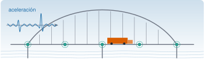
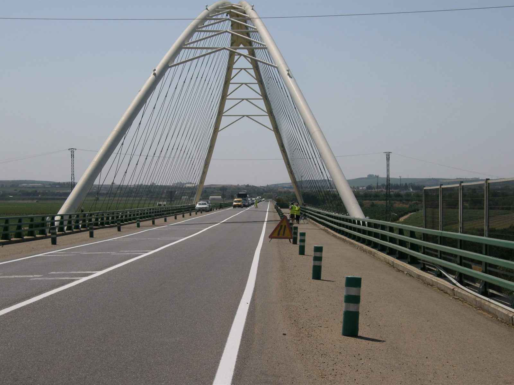
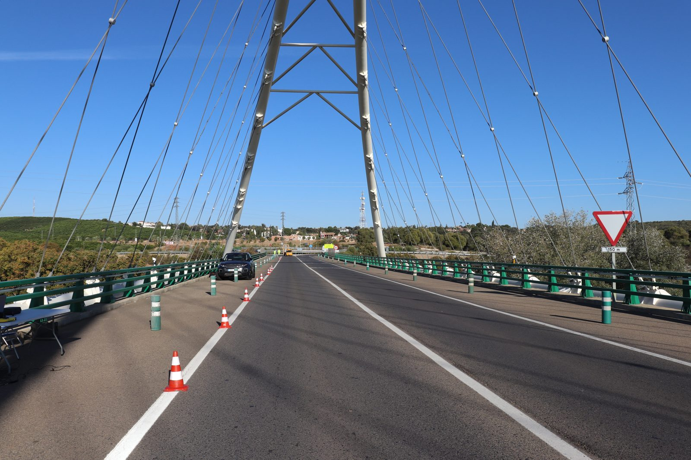
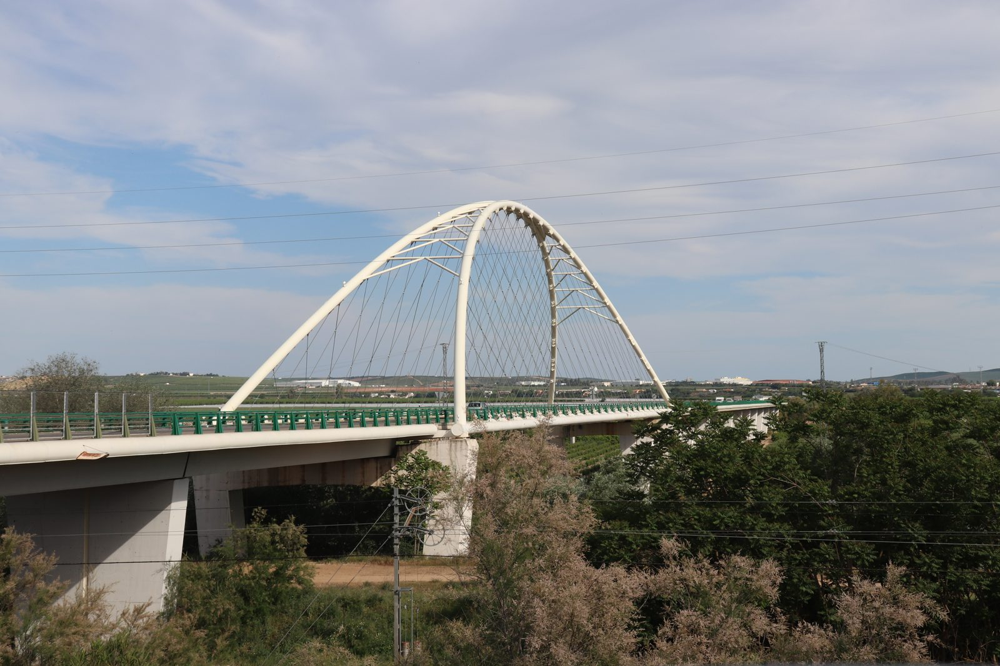
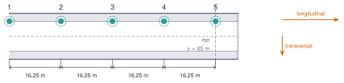
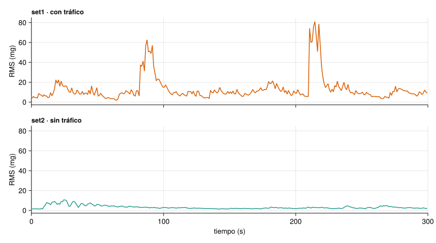
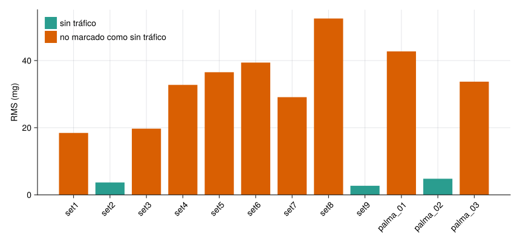
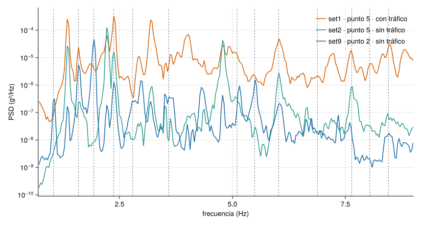
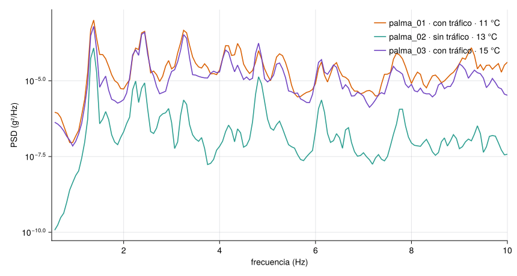

Ver el código
set = Dict(k => leer_aceleracion_csv(JULIO * "set$k.csv") for k in 1:9)
t1, a1, fs1 = set[1]
nota = "$(length(a1)) muestras, $(Int(round(fs1))) Hz, $(Int(round(t1[end] + 1 / fs1))) s"
nothingR1 · Catálogo de datos

El puente de Palma del Río es un arco de tablero atirantado (bowstring arch) sobre un río. En 2020 se midió su vibración operacional (operational vibration): la que produce el tráfico real, sin cortar la carretera. El ensayo se hizo para estudiar la captación de energía de la vibración (Infantes et al. 2022); aquí se usa solo el registro de aceleración del tablero, que sirve para ver una idea central de M0.3: el tráfico domina la señal, y cualquier indicador de salud estructural tiene que convivir con él.
| Estructura | Puente de arco de tablero atirantado en Palma del Río |
| Campañas con datos | 17-07-2020 (9 registros) y 16-10-2020 (3 registros) |
| Sensor | Acelerómetro sísmico, aceleración en g |
| Muestreo | 512 Hz (julio) y 2048 Hz (octubre) |
| Qué hay en el repositorio | Julio: los 9 registros de 5 min. Octubre: el registro 2 completo y los 10 primeros minutos de los registros 1 y 3 |
| Grabaciones completas | Depósito en Zenodo en preparación |
| Fotos | De la campaña de 2020 y de abril de 2021 (autoría: Rafael Castro Triguero) |
| Licencia | CC BY 4.0: citar Infantes et al. (2022) |
Si usas estos datos, cita el artículo (Infantes et al. 2022).




En julio se midió en cinco puntos del tablero, separados 16,25 m, con el acelerómetro situado en cada setup en el punto indicado en el cuaderno de campo:

Cada registro de julio dura 5 min. La tabla recoge las condiciones del cuaderno de campo (temperatura de 29 °C a las 10:41 y de 35 °C a las 11:50):
| Registro | Punto | Dirección | Tráfico | Inicio | Fin |
|---|---|---|---|---|---|
set1 |
5 | transversal | no se marca como ausente | 9:12 | 9:17 |
set2 |
5 | transversal | sin tráfico | 9:24 | 9:29 |
set3 |
5 | longitudinal | no se marca como ausente | 9:36 | 9:41 |
set4 |
5 | longitudinal | no se marca como ausente | 10:52 | 10:57 |
set5 |
5 | longitudinal | no se marca como ausente | 11:18 | 11:23 |
set6 |
4 | longitudinal | no se marca como ausente | 11:30 | 11:35 |
set7 |
3 | longitudinal | no se marca como ausente | 11:38 | 11:43 |
set8 |
2 | longitudinal | no se marca como ausente | 11:48 | 11:53 |
set9 |
2 | longitudinal | sin tráfico | 11:59 | 12:04 |
En octubre se midió en un solo punto, a 64,8 m de Palma del Río, con tres registros:
| Registro | Duración | Tráfico | Temperatura | Viento |
|---|---|---|---|---|
palma_01 |
30 min | con tráfico | 11 °C | sin viento |
palma_02 |
292 s (menos de 5 min) | sin tráfico | 13 °C | suave |
palma_03 |
30 min | con tráfico | 15 °C | suave |
Cada CSV tiene dos columnas, tiempo_s y aceleracion_g, separadas por ;. leer_aceleracion_csv devuelve el tiempo, la aceleración y la frecuencia de muestreo.
set = Dict(k => leer_aceleracion_csv(JULIO * "set$k.csv") for k in 1:9)
t1, a1, fs1 = set[1]
nota = "$(length(a1)) muestras, $(Int(round(fs1))) Hz, $(Int(round(t1[end] + 1 / fs1))) s"
nothingEl registro set1 tiene 153600 muestras, 512 Hz, 300 s.
Para ver cómo cambia la intensidad de la vibración se calcula el valor eficaz (RMS) en ventanas de 1 s (M3.2).
fig = Figure(size=(860, 480))
ax1 = Axis(fig[1, 1]; ylabel="RMS (mg)", title="set1 · con tráfico", titlealign=:left, titlesize=13, xticklabelsvisible=false)
ax2 = Axis(fig[2, 1]; ylabel="RMS (mg)", xlabel="tiempo (s)", title="set2 · sin tráfico", titlealign=:left, titlesize=13)
for (ax, k, c) in ((ax1, 1, NARANJA), (ax2, 2, VERDE))
t, a, fs = set[k]
tr, r = rms_por_ventana(a, fs, 1.0)
lines!(ax, tr, r .* 1e3; color=c)
xlims!(ax, 0, 300)
end
linkyaxes!(ax1, ax2)
fig
set1 (con tráfico) y set2 (sin tráfico). Cada ráfaga es un episodio de vibración intensa, compatible con el paso de un vehículo (el cuaderno no registra el tráfico).
rms = Dict(k => std(set[k][2]) * 1e3 for k in 1:9)
maxabs = Dict(k => maximum(abs, set[k][2]) * 1e3 for k in 1:9)
cociente = rms[1] / rms[2]
nothingEl RMS de set1 es 18,4 mg, frente a 3,7 mg de set2: 5,0 veces más. El pico máximo de set1 llega a 248 mg.
Calcula cuántas veces mayor es el RMS de set1 (con tráfico) que el de set2 (sin tráfico), a partir de los valores del texto.
\(18{,}4/3{,}7 \approx 5{,}0\) (con los valores sin redondear, \(18{,}44/3{,}68 = 5{,}01\)). Para una señal de ruido, el RMS es la raíz cuadrada de la potencia: cinco veces más RMS son unas 25 veces más potencia.
rms_oct = Dict{String,Float64}()
for (nom, ruta) in (("palma_01", "extractos/palma_01_10min.csv"), ("palma_02", "crudos/palma_02.csv"), ("palma_03", "extractos/palma_03_10min.csv"))
rms_oct[nom] = std(leer_aceleracion_csv(OCTUBRE * ruta)[2]) * 1e3
end
etiquetas = vcat(["set$k" for k in 1:9], ["palma_01", "palma_02", "palma_03"])
valores = vcat([rms[k] for k in 1:9], [rms_oct[n] for n in ("palma_01", "palma_02", "palma_03")])
sin_trafico = [l in ("set2", "set9", "palma_02") for l in etiquetas]
fig = Figure(size=(860, 400))
ax = Axis(fig[1, 1]; ylabel="RMS (mg)", xticks=(1:12, etiquetas), xticklabelrotation=π / 4)
barplot!(ax, 1:12, valores; color=[s ? VERDE : NARANJA for s in sin_trafico])
ylims!(ax, 0, nothing)
elementos = [PolyElement(color=VERDE), PolyElement(color=NARANJA)]
axislegend(ax, elementos, ["sin tráfico", "no marcado como sin tráfico"]; position=:lt, framevisible=false)
fig
Los tres registros sin tráfico (set2, set9 y palma_02) tienen un RMS de entre 2,7 y 4,8 mg; los demás, entre 18 y 53 mg. Aun sin tráfico, el puente nunca está quieto: vibra por el viento y por pequeñas excitaciones del entorno.
Con la PSD de Welch (M3.6) se ve a qué frecuencias vibra el puente. El informe del ensayo identificó 13 modos con FDD (M7.7) a partir de varios acelerómetros; la tabla da sus frecuencias y las de una campaña anterior.
| Modo | Tipo | Frecuencia (Hz) | Campaña anterior (Hz) |
|---|---|---|---|
| 1 | flexión vertical | 1,04 | 1,03 |
| 2 | torsión | 1,59 | 1,56 |
| 3 | torsión | 1,93 | 1,90 |
| 4 | flexión vertical | 2,37 | 2,38 |
| 5 | torsión | 2,79 | 2,80 |
| 6 | flexión vertical | 3,59 | 3,59 |
| 7 | torsión | 5,10 | 5,05 |
| 8 | torsión | 5,49 | 5,52 |
| 9 | torsión | 6,02 | 6,02 |
| 10 | torsión | 6,88 | 6,80 |
| 11 | torsión | 7,64 | 7,65 |
| 12 | torsión | 8,04 | 7,96 |
| 13 | torsión | 8,45 | 8,46 |
fdd = [1.04, 1.59, 1.93, 2.37, 2.79, 3.59, 5.10, 5.49, 6.02, 6.88, 7.64, 8.04, 8.45]
fdd_antes = [1.03, 1.56, 1.90, 2.38, 2.80, 3.59, 5.05, 5.52, 6.02, 6.80, 7.65, 7.96, 8.46]
dif_campanas = abs.(fdd .- fdd_antes) ./ fdd .* 100
nothingEntre las dos campañas, la frecuencia de un mismo modo cambia como mucho un 1,9 % (modo 2): ese es el orden de la variabilidad con la que habría que comparar cualquier cambio.
function psd_set(k)
t, a, fs = set[k]
f, P = psd_welch(a, fs; nseg=16384)
k = 0.7 .<= f .<= 9.0
return f[k], P[k]
end
fig = Figure(size=(860, 460))
ax = Axis(fig[1, 1]; xlabel="frecuencia (Hz)", ylabel="PSD (g²/Hz)", yscale=log10)
vlines!(ax, fdd; color=GRIS, linestyle=:dash, linewidth=1)
for (k, etiqueta, c) in ((1, "set1 · punto 5 · con tráfico", NARANJA), (2, "set2 · punto 5 · sin tráfico", VERDE), (9, "set9 · punto 2 · sin tráfico", AZUL))
f, P = psd_set(k)
lines!(ax, f, P; label=etiqueta, color=c)
end
xlims!(ax, 0.7, 9)
axislegend(ax; position=:rt, framevisible=false)
fig
set1, punto 5) y sin tráfico (set2, punto 5; set9, punto 2). Las líneas discontinuas son los 13 modos de la Tabla 3.
Los picos del registro set9 (punto 2, sin tráfico) caen sobre las líneas de los modos; en set1 y en set2 (punto 5) hay picos en otras frecuencias. La tabla compara, para set9, cada modo con el pico más cercano:
t, a, fs = set[9]
f, P = psd_welch(a, fs; nseg=16384)
picos = f[buscar_picos(f, P; fmin=0.7, fmax=9, n=40, separacion=0.08)]
cercano = [picos[argmin(abs.(picos .- f0))] for f0 in fdd]
dif = abs.(cercano .- fdd) ./ fdd .* 100
println("| Modo | FDD (Hz) | Pico más cercano de `set9` (Hz) | Diferencia |\n|---|---|---|---|\n" *
join(["| $m | $(coma(fdd[m])) | $(coma(cercano[m])) | $(coma(dif[m]; d=1)) % |" for m in 1:13], "\n"))set9.
| Modo | FDD (Hz) | Pico más cercano de set9 (Hz) |
Diferencia |
|---|---|---|---|
| 1 | 1,04 | 1,06 | 2,2 % |
| 2 | 1,59 | 1,59 | 0,2 % |
| 3 | 1,93 | 1,94 | 0,4 % |
| 4 | 2,37 | 2,38 | 0,2 % |
| 5 | 2,79 | 2,84 | 1,9 % |
| 6 | 3,59 | 3,59 | 0,1 % |
| 7 | 5,10 | 5,16 | 1,1 % |
| 8 | 5,49 | 5,50 | 0,2 % |
| 9 | 6,02 | 6,03 | 0,2 % |
| 10 | 6,88 | 6,97 | 1,3 % |
| 11 | 7,64 | 7,59 | 0,6 % |
| 12 | 8,04 | 7,97 | 0,9 % |
| 13 | 8,45 | 8,47 | 0,2 % |
Todos los modos tienen un pico a menos de un 3 % de su frecuencia FDD (resolución de la PSD: 0,031 Hz).
Con 13 modos y decenas de picos en 0,7–9 Hz, siempre habrá un pico cerca de cada modo. La tabla solo comprueba que los datos son coherentes con el informe; identificar los modos exige varios sensores a la vez (FDD, M7.7). Además, la misma comparación con set2 falla en los modos 1 y 3 (un 15 % o más): el punto de medida condiciona qué modos se ven.
Comparando set1 (con tráfico) y set2 (sin tráfico) en el mismo punto, ¿qué conclusión está respaldada por los datos?
set1 está más dañado que el de set2.Solo la a. La amplitud depende mucho del tráfico. Pero estos dos registros no permiten concluir nada sobre las frecuencias de los modos (b), no miden daño (c) y el RMS de set2 no es nulo: sin tráfico el puente sigue vibrando por el entorno (d).
En octubre se registró durante 30 min con tráfico (11 °C), unos 5 min sin tráfico (13 °C) y otra vez 30 min con tráfico (15 °C), siempre en el mismo punto (64,8 m).
fig = Figure(size=(860, 460))
ax = Axis(fig[1, 1]; xlabel="frecuencia (Hz)", ylabel="PSD (g²/Hz)", yscale=log10)
for (ruta, etiqueta, c) in (("extractos/palma_01_10min.csv", "palma_01 · con tráfico · 11 °C", NARANJA),
("crudos/palma_02.csv", "palma_02 · sin tráfico · 13 °C", VERDE),
("extractos/palma_03_10min.csv", "palma_03 · con tráfico · 15 °C", VIOLETA))
t, a, fs = leer_aceleracion_csv(OCTUBRE * ruta)
f, P = psd_welch(a, fs; nseg=2^15)
k = 0.5 .<= f .<= 10.0
lines!(ax, f[k], P[k]; label=etiqueta, color=c)
end
xlims!(ax, 0.5, 10)
axislegend(ax; position=:rt, framevisible=false)
fig
palma_01 y palma_03 se usan los 10 primeros minutos.
Los dos registros con tráfico tienen espectros parecidos entre sí, aunque la temperatura difiere 4 °C; el registro sin tráfico tiene la misma forma general pero mucha menos energía. Con dos registros por condición no se puede separar el efecto de la temperatura del de otras diferencias (viento, tráfico concreto): harían falta semanas de datos, que es lo que M12.5 trata.
Quieres construir una línea base (M0.3) con estos datos para detectar cambios en la frecuencia del modo 4 (2,37 Hz). Describe qué harías con el tráfico y con la temperatura, y qué limitaciones tienen estos registros.
Calcularía la frecuencia del modo 4 con la PSD de cada registro, agrupada por condiciones (tráfico y no tráfico), y mediría su dispersión en la estructura sana para fijar un umbral. Con estos datos solo hay 12 registros de dos días: sirven para ver el orden de magnitud de la variabilidad, no para una línea base fiable.
leer_aceleracion_csv, psd_welch y rms_por_ventana están en el paquete Resonancia (R2).Son las mismas que aparecen en el margen, junto al texto. La lista completa del curso, con el estado de verificación de cada ficha, está en R5.
Infantes, María, Rafael Castro-Triguero, Rafael R. Sola-Guirado, David Bullejos, y Michael I. Friswell. 2022. «A feasibility study on piezoelectric energy harvesting from the operational vibration of a highway bridge». Advances in Structural Engineering 26 (2): 205-17. https://doi.org/10.1177/13694332221120129.